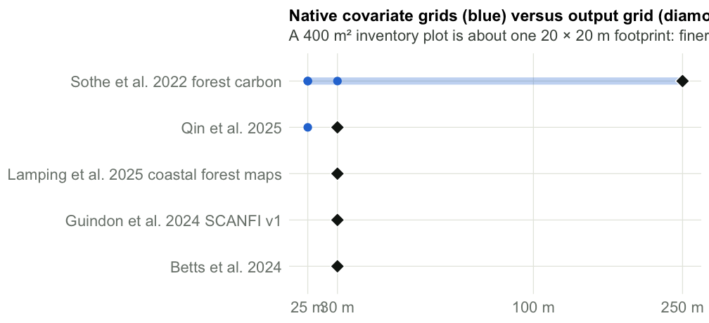
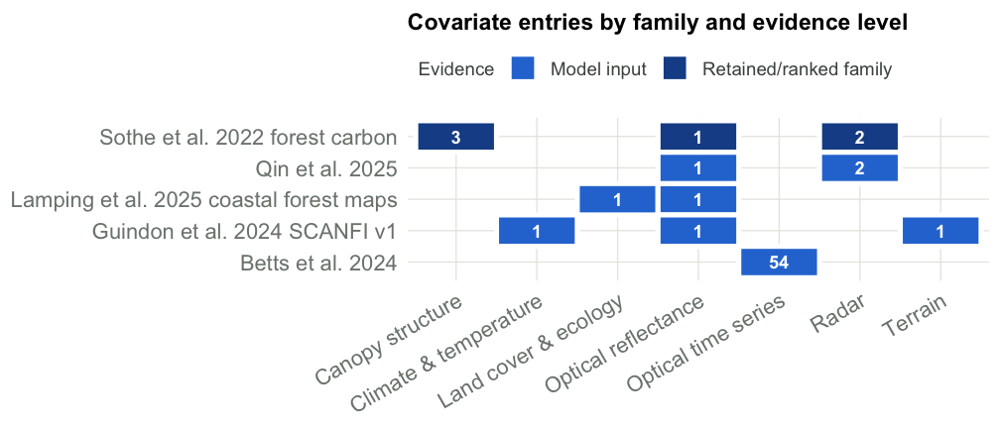
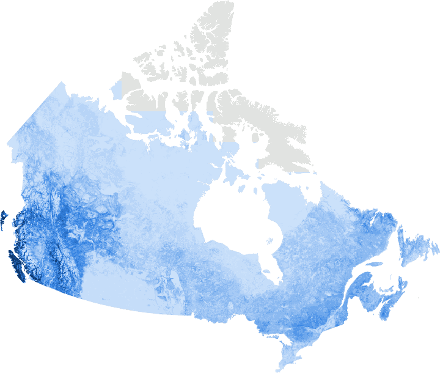
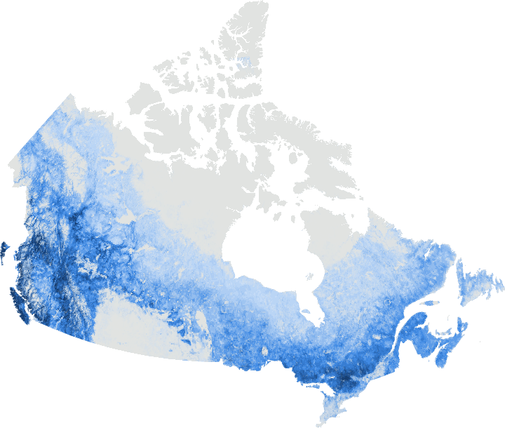
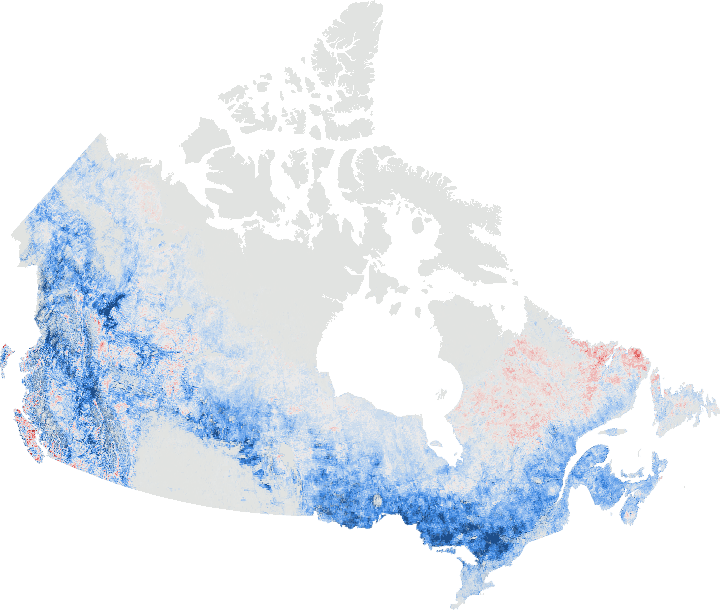

| Resource | Measures | Coverage | Plot support | Access | Used by |
|---|---|---|---|---|---|
| National Forest Inventory ground plots | Tree dimensions and derived biomass | Canada | Ground plots; precise footprint by protocol | Request measurements and coordinate access | Sothe et al. 2022 forest carbon (Reference biomass); Qin et al. 2025 (Reference data; exact role pending); Guindon et al. 2024 SCANFI v1 (External ground validation; source details pending) |
| NFI photo-interpreted plots | Modelled/interpreted forest attributes | Canada | Photo-plots; not direct ground measurements | Source access conditions | Guindon et al. 2024 SCANFI v1 (Training) |
| Québec permanent sample plots | Tree and ecological observations | Québec principally south of 52° N | 400 m² plots; repeated measurements | Public GeoPackage and dictionary | Guindon et al. 2024 SCANFI v1 (External ground validation; source details pending) |
| New Brunswick CLI | Tree observations and calculated AGB | New Brunswick | 400 m² main and 50 m² nested plots | Analysis archive; full geolocated raw inventory not verified | Betts et al. 2024 (Training and validation) |
| BC provincial forest observations | Forest biomass | British Columbia | Exact source release and coordinate support pending | Provider/source identity unresolved | Sothe et al. 2022 forest carbon (Reference biomass) |
| NRCan ENFOR sampled trees | Destructively measured tree biomass | Canada | Individual trees, not necessarily geolocated plots | Public CSV; nearly 9,000 trees/33 species reported | – |
| NASA ABoVE burned/unburned plot synthesis | Forest and organic-layer disturbance carbon | Alaska, NWT and Saskatchewan | Field plots; derived combustion estimates kept separate | Public CSV and guide | – |
| Ontario Vegetation Sampling Network | Forest plot observations | Ontario | Ground plots; original sheet lists 400 m² | Public measurements download not confirmed | – |
| CASFRI harmonized forest inventories | Forest inventory attributes | Canada | Inventory polygons/photo/ground sources vary | Original spreadsheet resource; exact release/access unresolved | – |
Forest
Plot data, then the covariates and training data behind each map, then the maps compared with each other.
1. Plot data
Placeholder. No forest plot data is ingested yet, so there is nothing to compare at plot locations. When plots arrive, this section will compare plot-level biomass or carbon with each map at the plot’s pixel, at the map’s native grid, following the soil-profile method on the Soils page.
The sources below are catalogued. Open downloads are the quickest route to a first plot comparison.
2. Covariates and training data
Each forest map comes from a model trained on a different kind of reference data, at a different scale. The training data matter as much as the covariates when maps disagree.
| Study | Target | Geography | Training / reference data | Plot support | Output grid (m) | Covariate entries | Predictive evidence |
|---|---|---|---|---|---|---|---|
| Sothe et al. 2022 forest carbon | Forest live and dead plant carbon | Canada; reference observations concentrated in BC | BC provincial forest observations (Reference biomass); National Forest Inventory ground plots (Reference biomass) | Ground biomass; coordinate precision can limit 250 m matching | 250 | 6 | Canopy height ranked highest; family/whole-model evidence |
| Guindon et al. 2024 SCANFI v1 | Forest AGB and attributes | Canada; regional tile/search support | NFI photo-interpreted plots (Training); Québec permanent sample plots (External ground validation; source details pending); National Forest Inventory ground plots (External ground validation; source details pending) | Photo-interpreted targets; ground plots are external validation | 30 | 3 | Model input families; exact retained definitions pending |
| Betts et al. 2024 | Forest AGB | New Brunswick; overlapping 60 × 60 km model zones plus province-wide comparison | New Brunswick CLI (Training and validation) | 400 m² main plots; nested 50 m² plots | 30 | 54 | Fitted model; variable-level rankings not fully catalogued |
| Qin et al. 2025 | Forest AGB | Canada’s treed lands | National Forest Inventory ground plots (Reference data; exact role pending) | Ground/photo-plot roles require full-method reconciliation | 30 | 3 | Published multisensor model; exact feature subset/rankings pending |
| Matasci et al. 2018 | Forest AGB | Forested Canada | – | Airborne reference support pending | 30 | 0 | Original reference only; retained features not verified |
| Lamping et al. 2025 coastal forest maps | Forest biomass and structure | Coastal southern Alaska and BC | – | Forest plots plus raster predictors | 30 | 2 | Model families; exact retained features pending |


3. Maps compared with each other
Aboveground biomass 2020 · SCANFI v1.2 vs ESA CCI v6
Both products map aboveground biomass for 2020 in Mg/ha. SCANFI (30 m) is averaged to the ESA CCI 100 m grid. Points where both products are zero (non-forest in both) are left out, so agreement is not inflated by empty land.

2259 Mg/ha

2259 Mg/ha

−121 (B higher)+121 (A higher)

| Comparison | Points | Mean A | Mean B | Mean A − B | RMSD | r | Within ±25% |
|---|---|---|---|---|---|---|---|
| Aboveground biomass 2020 | 12,134 | 60.4 | 84.4 | -24 | 56.8 | 0.71 | 23% |
Of the points where either product shows biomass, 0.0% have biomass only in SCANFI and 0.4% only in ESA CCI. These are differences in where forest is mapped, separate from differences in how much biomass it holds.
Products not compared, and why
| Product A | Product B | Reason | Detail | What would make it comparable |
|---|---|---|---|---|
| McMaster/WWF forest carbon (AGB + BGB + dead plant; kg C/m²) | SCANFI v1.2 or ESA CCI aboveground biomass (Mg/ha) | Different pool | Total vegetation carbon versus aboveground biomass only. | Separate the aboveground pool and apply a documented carbon fraction. |
| Canadian SBFI stand AGB (polygons; 2020) | SCANFI v1.2 or ESA CCI AGB (2020) | Different support | Same pool and year but stand polygons rather than pixels; deferred to a polygon-level comparison. | Summarise each raster within SBFI polygons and compare polygon means. |
| ESA CCI AGB (2007–2022 except 2020) | SCANFI v1.2 AGB (2020) | Different year | Only the 2020 ESA CCI layer matches the SCANFI v1.2 reference year. | Use SCANFI v2 years when its ingestion is confirmed. |
| SCANFI v2 historical biomass | Any | Not available | Earth Engine ingestion not yet confirmed. | Confirm and populate forests/maps/scanfi_v2_biomass. |
| Lamping coastal forest biomass | Any | Not hosted | Identified but not in Earth Engine. | Ingest the GeoTIFF release. |